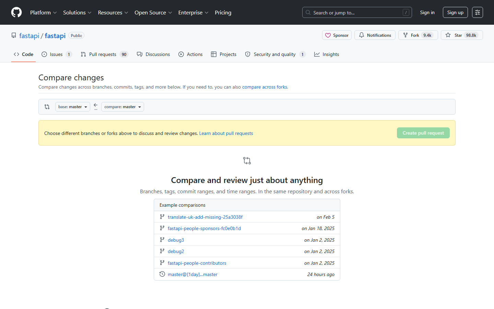

第七课：Pull Request（二）— 创建 PR
时长：25 分钟 | 前置：第六课 | P0 词条：14 个 | 覆盖 UI 元素：18 个
学习目标
学完这节课，你能：
- 从零开始创建一个 Pull Request
- 理解 Base Branch 和 Compare Branch 的区别
- 正确填写 PR 的标题和正文
- 选择 Reviewer、Assignee、Label
- 区分 Draft PR 和普通 PR
0. 开场（1 min）
画面：展示 Fork + Clone 后的本地代码（接上节课）

旁白：
"上节课我们把代码 Fork 到了自己名下，又 Clone 到了本地。现在该干活了。
这节课的目标：在本地改代码 → Push 到自己的 Fork → 向原仓库发起 PR。
这是整个 GitHub 工作流的核心环节。"
1. 准备：在本地做一次改动（4 min）
画面：在本地 IDE 中做一个小改动
1.1 最小改动演示（为了教学）
| 步骤 | 操作 |
|---|---|
| 1 | 打开项目里的一个文件（比如 README.md） |
| 2 | 在末尾加一行（或者修改一个文档中的错别字） |
| 3 | 保存文件 |
| 4 | 终端：git add . → git commit -m "fix: 修复 README 错别字" |
| 5 | git push origin main |
这里不讲 Git 命令的细节，因为这门课是 GitHub 界面课。如果你不熟悉 git add/commit/push，建议配合一门 Git 基础课学习。我们这里重点看 GitHub 上 Push 之后发生了什么。
2. Push 之后 GitHub 上的变化（3 min）
画面：Push 后打开你的 Fork 仓库页面
2.1 黄色提示条（重要！）
| 元素 | 英文 | 中文含义 |
|---|---|---|
| 黄色提示条 | "This branch is 1 commit ahead of ant-design:main" | 你的 main 分支比原仓库领先 1 个提交 |
| 旁边的按钮 | Compare & pull request | 对比并发起拉取请求 |
| 旁边的按钮 | Contribute | 贡献（点开有下拉菜单） |
操作演示：
【录屏】Push 后刷新 Fork 页面 → 鼠标指向黄色提示条 → 逐字解释 → 点击 Compare & pull request
3. PR 创建页面详解（10 min）
画面：点击 Compare & pull request 后进入的页面
旁白：
"这是整个 GitHub 上最重要的一个页面。我们来一寸一寸地看。"
3.1 页面顶部：分支选择
| 元素 | 英文 | 说明 |
|---|---|---|
| 顶部文字 | "Compare changes" | 对比改动 |
| 左侧下拉 | base repository + base branch | 目标仓库和目标分支（PR 要合到哪） |
| ← 箭头 | ← | 改动方向 |
| 右侧下拉 | head repository + compare branch | 来源仓库和来源分支（改动从哪来） |
base = 你要合入的目标（通常是原仓库的 main）
compare = 你改的代码所在的地方（通常是你 Fork 的 main 或某个分支）
3.2 确认 Base 和 Compare
| 检查项 | 正确设置 |
|---|---|
| base repository | 原始仓库（ant-design/ant-design） |
| base branch | main（或 master） |
| head repository | 你的 Fork（你的用户名/ant-design） |
| compare branch | main（或你改了代码的那个分支） |
如果方向反了，PR 会是你想让原仓库的代码合并到你的仓库——这显然不对。
3.3 "Able to merge" 绿色提示
| 提示文字 | 含义 |
|---|---|
| "Able to merge"（绿色） | 你的改动可以自动合并，没有冲突 |
| "Can't automatically merge"（红色） | 有冲突，需要先解决（下节课讲） |
3.4 PR 标题
| 元素 | 说明 |
|---|---|
| 标题输入框 | 默认填了上一次 commit message |
| 需要改吗 | 如果 commit message 写得清楚就不用改，否则写得更通俗易懂 |
| 好标题示例 | 修复 Select 组件在多选模式下 placeholder 不显示 |
| 差标题示例 | fix、update、bug |
3.5 PR 正文（Write 标签）
| 元素 | 说明 |
|---|---|
| Write 标签 | Markdown 编辑器（和 Issue 一样） |
| Preview 标签 | 预览渲染效果 |
| 应该写什么 | 参考下方 PR 模板格式 |
一个好的 PR 正文应该包含：
## 做了什么
修复了 Select 组件在多选模式下 placeholder 不显示的问题
## 原因
当 mode 设为 multiple 时，input 的 placeholder 被 value 数组覆盖
## 截图
（拖入 Before / After 对比截图）
## 关联 Issue
Fixes #1234
3.6 PR 右侧配置项
| 配置项 | 英文 | 说明 |
|---|---|---|
| Reviewers | Reviewers | 指定谁来审查你的代码 |
| Assignees | Assignees | 谁负责这个 PR（通常不填或填自己） |
| Labels | Labels | 标签分类（和 Issue 一样） |
| Projects | Projects | 关联项目看板 |
| Milestone | Milestone | 关联里程碑 |
| Development | Development | 关联的 Issue（会自动关联） |
4. 提交 PR（2 min）
4.1 三种提交按钮
| 按钮 | 英文 | 含义 |
|---|---|---|
| 绿色主按钮 | Create pull request | 创建正式 PR，Reviewer 会收到通知 |
| 下拉箭头 → | Create draft pull request | 创建草稿 PR（下节详讲） |
4.2 点 Create pull request 之后
| 发生了什么 | 在哪里看 |
|---|---|
| PR 创建成功 | 跳转到新 PR 页面 |
| 原仓库多了一个 PR | 原作者在 PR 列表里能看到 |
| Reviewer 收到通知 | 如果有指定 Reviewer，对方通知铃铛有提醒 |
操作演示：
【录屏】填写完整 PR → 点 Create pull request → 展示创建后的 PR 页面 → "这是 PR 的 Conversation 标签，下节课我们讲 PR 的完整生命周期"
5. Draft PR（草稿 PR）（3 min）
5.1 什么是 Draft PR
| 概念 | 说明 |
|---|---|
| 是什么 | 标记为"还在开发中"的 PR |
| 和普通 PR 的区别 | Draft PR 不能被 Merge，Reviewer 不会收到强通知 |
| 什么时候用 | 1. 代码还没写完 2. 想提前展示方案 3. 需要讨论但还不能合并 |
| 外观区别 | 标题旁有灰色 "Draft" 标签，Merge 按钮不可用 |
5.2 Draft PR 怎么操作
| 操作 | 说明 |
|---|---|
| 创建时 | Create pull request 下拉 → Create draft pull request |
| 转正 | 在 PR 页点 "Ready for review" → Reviewer 才会收到正式通知 |
| 退回 Draft | 已经转正的 PR 也可以退回到 Draft 状态 |
最佳实践：代码写到 70% 开 Draft PR → 收到早期反馈 → 写完后转 Ready for review。
6. PR Template（PR 模板）（2 min）
6.1 和 Issue Template 原理一样
| 概念 | 说明 |
|---|---|
| 文件位置 | .github/PULL_REQUEST_TEMPLATE.md 或 .github/PULL_REQUEST_TEMPLATE/ 目录 |
| 作用 | 每次创建 PR 时自动填入模板内容 |
| 示例 | 让贡献者必须填写"做了什么/为什么/怎么测试" |
示例模板：
## Summary
<!-- 用一两句话描述这个 PR 做了什么 -->
## Motivation
<!-- 为什么要做这个改动？关联哪个 Issue？ -->
## Screenshots
<!-- 如果改了 UI，请附上前后对比截图 -->
## Checklist
- [ ] 代码通过测试
- [ ] 更新了文档
- [ ] 关联了相关 Issue
7. 常见误区（2 min）
| 误区 | 正确 |
|---|---|
| "PR 必须是给开源项目用的" | PR 也可以在同一仓库的不同分支之间用（团队内最常见） |
| "Base 选错了可以改" | 创建后不能改 base 仓库和分支，只能关掉重建 |
| "PR 标题就是 commit message" | 标题可以改，而且应该比 commit message 更通俗 |
| "提交了 PR 就不能再 Push 了" | 可以继续 Push，PR 自动更新 |
课后作业
- 基于上节课 Fork 的仓库，在本地做一个修改 → Push → 创建 PR
- 写完整的 PR 正文：包含 "做了什么"、"原因"、"截图"（如果涉及界面）
- 创建第二个 PR，用 Draft PR 模式 → 看一眼 Draft 标签 → 转 Ready for review
- 在你自己仓库里创建
.github/PULL_REQUEST_TEMPLATE.md，下次创建 PR 看效果
本课术语速查
{.glossary-table}
| 英文 | 中文 | 出现位置 |
|---|---|---|
| Pull Request (PR) | 拉取请求 | 顶部标签栏 |
| Compare & pull request | 对比并发起 PR | Push 后黄色提示条 |
| Base branch | 目标分支 | PR 创建页面顶部左侧 |
| Compare branch | 来源分支 | PR 创建页面顶部右侧 |
| Head repository | 来源仓库 | PR 分支选择右侧 |
| Able to merge | 可以合并 | 分支选择下方的绿色/红色提示 |
| Reviewer | 审查者 | PR 右侧配置 |
| Create pull request | 创建 PR | 绿色提交按钮 |
| Draft pull request | 草稿 PR | 提交按钮下拉菜单 |
| Ready for review | 准备好审查 | Draft → 正式 PR 的按钮 |
| PR Template | PR 模板 | .github/PULL_REQUEST_TEMPLATE.md |